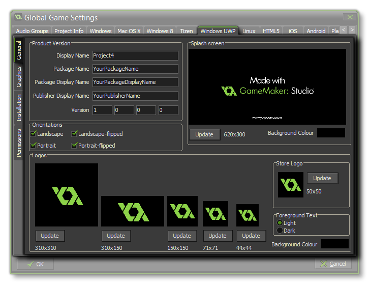
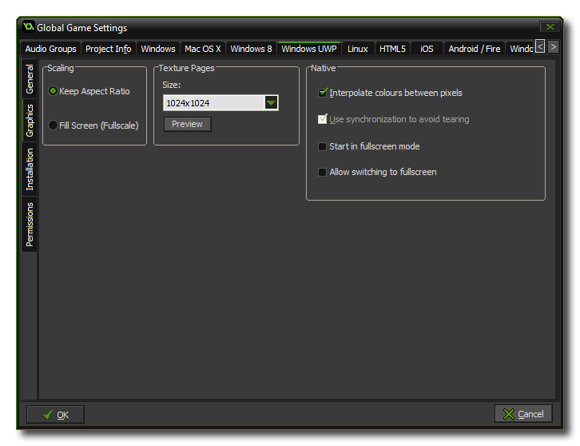
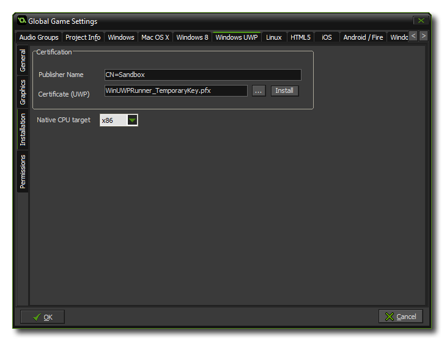
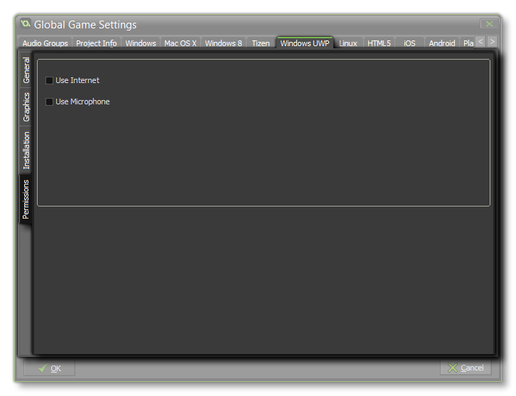

In the Global Games Settings of GameMaker: Studio, you can find the different setup options related to how your final game will look when you create the executable for the target platform. Here we will look at the
Windows UWP tab. It is split into three sub-tabs, each of which is explained in the sections below:

This section is where you should set up the details of your app like its name and any associated graphics. Below is a list of all the available options and what they represent:
- Display Name: Specifies the friendly name for the app that is displayed to users (this string is localizable).
- Package Name: This is the name of the package that you have created and should match that used for the Developer key that you have created for the game (see the Installation Sub-Tab, below).
- Package Display Name: This is the "short name" of the package and should Ideally be the same as the Display Name
- Publisher Display Name: This is the name of your company or the person that you wish to associate as the games publisher.
- Version: The version number of your game.
- Orientations: Specifies the orientations in which the game would prefer to be shown for the best user experience. The available options are:
On devices that can be rotated, such as tablets, the game won't be redrawn for orientations that aren't specified with this property - for example, the game won't rotate if the device is rotated to a Portrait orientation but the property specifies only Landscape and Landscape-flipped orientations. On devices that can't be rotated, a game might be shown in that device's default orientation, and the game's preferred orientation will be ignored, however, your game's preferred rotation will be honored on devices on which a rotation lock has been activated. These orientation preference choices apply to both the splash screen and the game itself every time a new instance is launched.
- Landscape
- Portrait
- Landscape-flipped
- Portrait-flipped
- Splash Screen: This is the screen that will be shown when you start your game, and it cannot be larger than 620 x 300 pixels. Click on the Update button to change it, then select set the Background colour for it.
- Logos: These are the Windows 10 tile and icon logos that your game will use. It is worth noting that these images can be transparent *.png files, in which case they will be drawn over the Background colour specified in the appropriate section.
NOTE: The background colour specified here also applies to the button colour in any app-owned dialog boxes and to the App Description page in the Store!
- - The large square image is the large live tile format and should be 310 x 310 pixels. Note that this will only be used on the desktop OS.
- - The next image is the wide version of the logo image, which appears when the tile appears in its wide format and should be 310 x 150 pixels. If this image isn’t provided, the tile can display only in the square format and can’t accept notifications based on wide template types. Since the user can decide which format the tile uses it is recommended that you include a wide logo image. Also note that if a wide logo image is provided, the tile may appear initially in its wide format.
- - The next square image specifies the smaller logo that appears in the tile to identify the game in the normal sized, square tile. It should be 150 x 150 pixels.
- - The final tile icon is for the small tile and should be a 71x71 pixel image.
- - The smallest icon is the logo image that appears next to the App name in the search bar and other areas of the UI.
- Store Logo: Sets the icon to be used when shown in the Windows Store and it should be an image of 50x50px.
- Foreground Text: Sets the value of the text colour relative to the background colour on the app’s tile in Windows. The value is either “Light” or “Dark”.

In this section you can set the way that your game should react to being scaled in any way (either by dragging the window borders or by full screening it), and this can either be Keep Aspect Ratio or Fill Screen. Next is the option to set the size of the Texture Page. The default (and most compatible) size is 1024x1024, but you can choose from anywhere between 256x256 up to 8192x8192. There is also a button marked Preview which will generate the texture pages for this platform and then open a window so that you can see how they look. This can be very useful if you wish to see how the texture pages are structured and to prevent having texture pages larger (or smaller) than necessary.
NOTE: Be aware that the larger the size of the texture page, the less compatible your game will be.
WARNING! Switching off the application surface will disable all the scaling options set in the Global Game Settings until it has been switched back on again. See
The Application Surface for further details.

For your game to run on the UWP platform it has to be certified correctly, and this is done from the Installation tab. You will first be required to give your publisher name, which is formatted as CN=<publisher_name_here>, and then give a path to your Developer Key. GameMaker: Studio supplies a default Developer Key for WindowsUWP development, but it is recommended that you generate your own and point to it here. To do this, create an empty project in Visual Studio Express then store somewhere safe a copy of the automatically generated *.pfx (the developer key) that it will have included in the empty project. You should then link that *.pfx file here.
After linking to the file, you should click on the associated Install button and then follow the instructions in the command prompt that will open. If you do not do this then using the
Run/Debug buttons (or hitting F5) will fail and your game cannot be tested (however, if you use Create Application the certification installation process will automatically be launched if
the *.pfx has yet to be registered).
NOTE: When it comes to uploading your app to the store you will need to get the correct *.pfx for your title. This is done via associating your app with the Windows Store in
Visual Studio which causes Visual Studio to generate a new *.pfx specifically for the app. It is also worth noting that you can associate any app with the Windows Store in Visual Studio, meaning you
can associate a blank project with the Windows Store app and simply copy the generated pfx to a safe location which can then be used within Global Game Settings.
The final option is to select the CPU architecture to target. You can choose between x86<&b>, x64 or ARM.
Permissions
 Depending on what you want your game to have access to, you may also need to check the permissions from the Permissions tab. If your game uses (for example) the function url_open() then you would need to check the "Use Internet" box. The available permissions are:
- Use Internet: Marks the game as having access to internet.
- Use Microphone: Marks the game as having access to the microphone of the device.